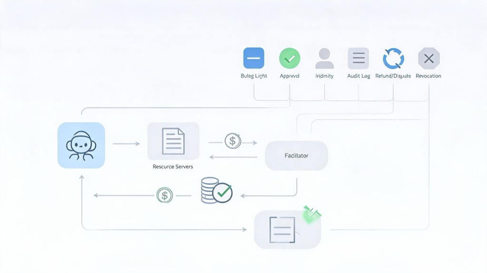

Brian Armstrong 在 AiFi 相关帖文 里主张：agent 需要可编程、全球、即时、低费用的钱，并把 crypto 框成 AiFi，也就是 agentic finance 的货币。我把这句话和 Coinbase x402、Google AP2、Visa 以及几篇独立分析放在一起看后，更愿意把结论先收窄：公开材料支持的不是“crypto 已经证明自己会成为 AiFi 的钱”，而是 crypto 可能成为 agentic finance 的结算层，尤其适合机器可读、低风险、即时交付的数字资源。一旦 agent 真的能花钱，后面更难的产品面大概率会落到授权、限额、身份、审计、撤销、退款、争议与责任归属。
Armstrong 指到的，是机器支出缺口
Agent 在任务中途可能要拉一次 API、取一段数据、买一点算力或调用某个数字服务。它不适合每次都停下来等人点 checkout、刷卡，或者绕回传统银行轨道；Armstrong 把需求概括成 programmable、global、instant、low-fee，正好指向这个机器支出缺口。Coinbase 把 x402 定位成面向 API、服务、软件和 AI agent 的 stablecoin-over-HTTP 支付标准，也是在碰同一个问题：机器能不能在请求资源的同时完成付款。
这里我不太想把它看成 crypto 和信用卡之间的口号比较。更具体的问题是：一个 agent 发起请求时，付款能不能成为软件流程的一部分，而不是重新跳进面向人类的结账页面。对 coding 或 workflow agent 来说，最自然的场景会集中在小额、即时、机器可验证的数字资源：一次 API 响应、一段数据、一个软件服务调用，或者一小段算力使用。只要金额小、交付快、结果可以由程序直接消费，stablecoin + HTTP payment rail 的产品价值就比较容易看见。
Armstrong 这条线索有意思的地方，是它把“钱”从人的操作界面里拿出来看。传统支付栈面向人类、商户、银行账户、卡组织和风控流程，默认参与者会看页面、点按钮、处理失败状态。Agentic workflow 要的东西更像程序对程序的资源采购：请求、报价、签名、验证、交付、记录。Crypto 的吸引力就在于它可以把钱变成软件能直接操作的对象；但读到这里，我觉得问题还只走完了一半：它解释了钱怎样出去，还没有解释谁允许它出去。
x402 让 API 有了请求级付款路径
按 Coinbase 的 x402 流程文档，流程可以分成几个步骤：服务器先报价并给出支付选项；客户端带回已签名的支付证明；facilitator 负责验证并结算；服务器再返回资源。这形成的是请求级的支付闭环。它让 API、服务、软件资源和 agent 调用之间出现一条可编程付款路径，但这条路径本身仍是 payment rail，不是完整的采购治理系统。

这个机制最值得注意的地方，是资源提供方可以把一次 HTTP 请求变成一次带价格的请求。客户端如果接受价格，就提交签名后的支付证明；facilitator 校验付款材料并推动结算；服务端在验证通过后返回资源。这个闭环适合机器之间的低摩擦交易，因为它把付款从另一个页面、另一个账户流程，压回到请求和响应之间。对 agent 来说，付款不再一定是任务中断点，而可以成为任务执行的一部分。
Coinbase 的 facilitator 文档 还声称具备支付校验、链上结算、OFAC/KYT 筛查、多链支持，以及较低的 facilitator 定价。这些能力很有用，但它们主要停在支付与结算层。支付校验回答的是这笔付款材料是否有效，链上结算回答的是钱能否完成转移，筛查回答的是某些合规检查能否嵌入 facilitator。它们还没有自动回答企业审批、责任分配、退款、撤销或争议处理。
所以我现在更倾向于把 x402 看成一种把小资源变成可付款资源的方式。API 过去常见的模式是订阅、套餐、预付费额度或人工开票，这些模式对人类采购可行，对临时运行的 agent 不一定顺手。请求级付款把粒度压到一次资源访问，让服务端可以报价，让客户端可以按需支付。这对数字资源有意义，但它只解决了结算动作本身。
付款完成，不等于购买被允许
一份签过名的 stablecoin 支付证明，说明的是这笔钱按指令付出去了。它本身并不回答这些问题：预算还有没有，用户有没有授出这笔委托，商户是否接受该 agent，审批该怎么路由，权限能否撤销，出事以后谁负责争议。付款成功可以证明某个支付动作完成，却不能自动证明这次购买符合组织规则、用户意图或商户政策。
Google 的 AP2 规范 与 Visa 的 Intelligent Commerce 把授权、问责、消费限额、审批工作流、可信身份、商户控制与审计证据，写成另一套 control plane 职能。它们讨论的不是裸转账那一层。一个 agent 能付款，不等于它拥有采购授权；一个商户收到钱，不等于它知道这次委托来自哪个用户、哪条规则、哪个预算、哪种可追责身份。付得出去，不等于允许花这笔钱。
这也是 agentic finance 里很容易被揉在一起的两件事。第一件事是结算：钱怎样从一方到另一方，成本多少，速度多快，能否由软件触发。第二件事是许可：谁能触发，触发前要不要审批，触发金额上限是多少，触发后谁能审计，失败后谁能撤销，交付争议怎么处理。x402 和 stablecoin rail 更接近第一件事；AP2、Visa 这类材料讨论的 control plane 更接近第二件事。两层都重要，但不能互相替代。
独立技术分析 Free-Riding the Agentic Web 报告了若干 x402 相关缺陷类别，包括跨资源替换、重复结算竞态、授权额度透支、拒绝结算，以及资源泄漏。这不支持推导出所有 x402 部署都不安全，但它说明：自动付款 rail 接上以后，会留下具体的安全与交付风险。只要 agent 可以自动付款，攻击面就不再只是账号登录或 API key 泄漏，还包括价格、资源、签名证明、结算状态与交付状态之间的对应关系。
Coinbase 在 Payments stablecoin 基础设施文章 中声称，x402 在过去一年处理了 160M+ 笔 agentic payments。这个数字可以作为 Coinbase 的厂商口径引用，但我不会直接把它读成真实、多样、持续的 agent 商业活动证明。独立测量论文 How Agentic Is Agentic Commerce? 提醒：结算笔数本身可能制造出来，不宜直接读成 agentic commerce 广泛采用的证据。这个指标更适合放在它原本的位置：它说明 rail 上发生了大量结算记录，不单独说明需求质量、参与者多样性或真实采购场景成熟度。
更可能先出现的形态，是 rail + control plane
把栈拆成两层看，这件事会清楚很多。x402 与 stablecoin 负责结算；像 Circle stablecoin payments 文档 所展示的那样，支付服务商还可以在外面包一层 API、入金地址、收款方筛查、链上结算、Travel Rule、webhook 与退款窗口。这些是 provider wrapper 能加上的运营与合规能力，不是所有 stablecoin 转账默认自带的能力。换句话说，stablecoin 提供可编程结算基础，provider wrapper 可以把它包装成商户和平台更容易接入的支付能力。
授权委托、身份、限额、审批与争议证据，则更接近 AP2 / Visa 这类 control plane 在处理的事。公开材料仍未清楚表明：企业级退款、争议、退单、撤销、审批路由与审计策略执行，已经在生产部署中成熟到位。这里我会继续保留边界：不能因为 x402 文档描述了付款握手，就说它已经覆盖完整采购治理；也不能因为 AP2 或 Visa 提出 control plane 职能，就说这些问题已经全部解决。更合理的判断是，rail 和 control plane 会一起构成 agentic finance 的可用产品面。
这也给落地场景划出了一条比较现实的边界。低价值、即时交付的 API 自动采购更接近可用，因为资源清楚、金额较小、交付可以马上验证，争议成本也相对可控。企业采购会复杂得多：同样是 agent 发起付款，背后还要有预算归属、审批路径、供应商准入、审计记录、退款规则和责任分配。跨境微任务打款也类似，结算 rail 很有用，但身份核验、任务核验、制裁/地域检查、税务记录、出金、争议与追偿，仍然落在 rail 之外。
所以我从 Armstrong 这条 AiFi 线索里拿到的结论是：agent 确实需要能让软件直接花出去的钱，crypto 也可能成为其中一层，尤其在 stablecoin、HTTP payment、facilitator 和 provider wrapper 组合起来以后，数字资源采购会比传统 checkout 更贴近 agent workflow。但 agentic finance 不会停在结算完成的那一刻。真正会让企业、平台和商户愿意接入的产品，可能是 rail + control plane：钱能出去，权限说得清，记录查得到，问题发生后还有恢复路径。